นี่ไม่ใช่หมู่บ้านที่ถูกทิ้งร้างตามเวลา
แต่มันคือหมู่บ้านที่ “ทุกคนหนีบางอย่างไป”
และบางอย่างนั้น…อาจยังอยู่ที่นี่
กรอก MBTI ของคุณก่อนเริ่ม
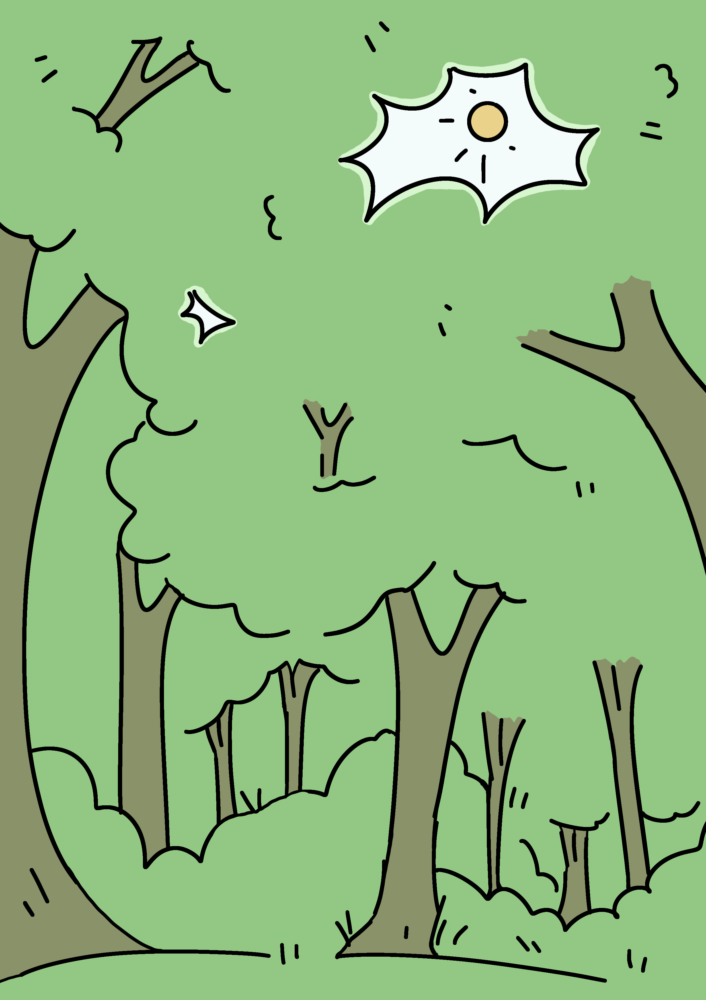
คุณลืมตาขึ้นช้า ๆ
แสงแดดลอดผ่านใบไม้ลงมาเป็นลำ กระทบใบหน้าของคุณ
พื้นดินเย็นและชื้น
กลิ่นดินผสมกลิ่นใบไม้แห้งลอยอยู่ในอากาศ
คุณพยายามนึก…
แต่ไม่มีอะไรเลย
ไม่มีชื่อ ไม่มีความทรงจำ ไม่มีคำอธิบายว่าคุณมาอยู่ที่นี่ได้ยังไง
ทันใดนั้น—
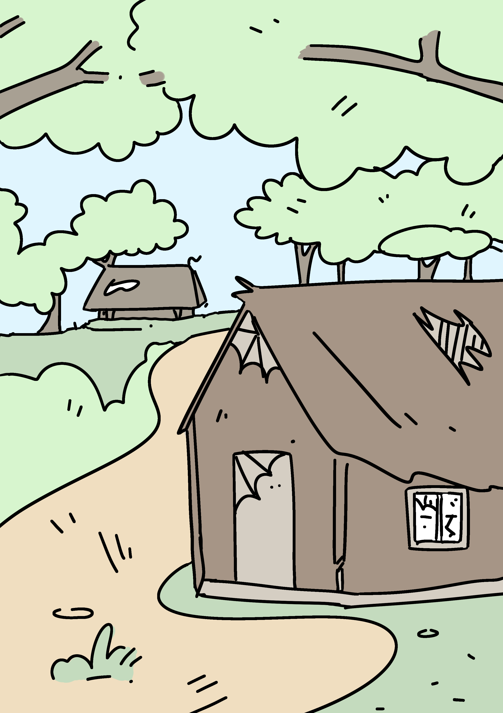
คุณเริ่มสังเกตสิ่งรอบตัว
เสียงการต่อสู้…แว่วมาไกล ๆ
สัญลักษณ์บางอย่าง…ถูกสลักไว้บนต้นไม้
ทางเดินเล็ก ๆ…นำไปสู่บ้านไม้หลังหนึ่ง
และพื้นที่รอบตัว…ยังไม่ถูกสำรวจ
หัวใจคุณเต้นแรงขึ้นเล็กน้อย
คุณจะเลือกอะไร?
คุณเดินลึกเข้าไปในป่า
จนกระทั่งต้นไม้เริ่มบางลง
ตรงหน้าคุณคือ “หมู่บ้าน”
บ้านไม้หลายหลังตั้งเรียงกัน
แต่ไม่มีเสียงพูด ไม่มีเสียงชีวิต
ประตูบางบานเปิดค้าง
หน้าต่างแตก
ของใช้ยังวางอยู่เหมือนเพิ่งถูกทิ้งไป
ลมพัดผ่าน…ทำให้ประตูไม้กระทบกันเบา ๆ
คุณรู้สึกได้ทันที—
นี่ไม่ใช่หมู่บ้านที่ถูกทิ้งร้างตามเวลา
แต่มันคือหมู่บ้านที่ “ทุกคนหนีบางอย่างไป”
และบางอย่างนั้น…อาจยังอยู่ที่นี่
คุณวิ่งตามเสียงไป
หัวใจเต้นแรงขึ้นเรื่อย ๆ
จนกระทั่งคุณทะลุออกจากป่า
ตรงหน้าคุณคือ ลานกว้าง
และที่กลางลาน—
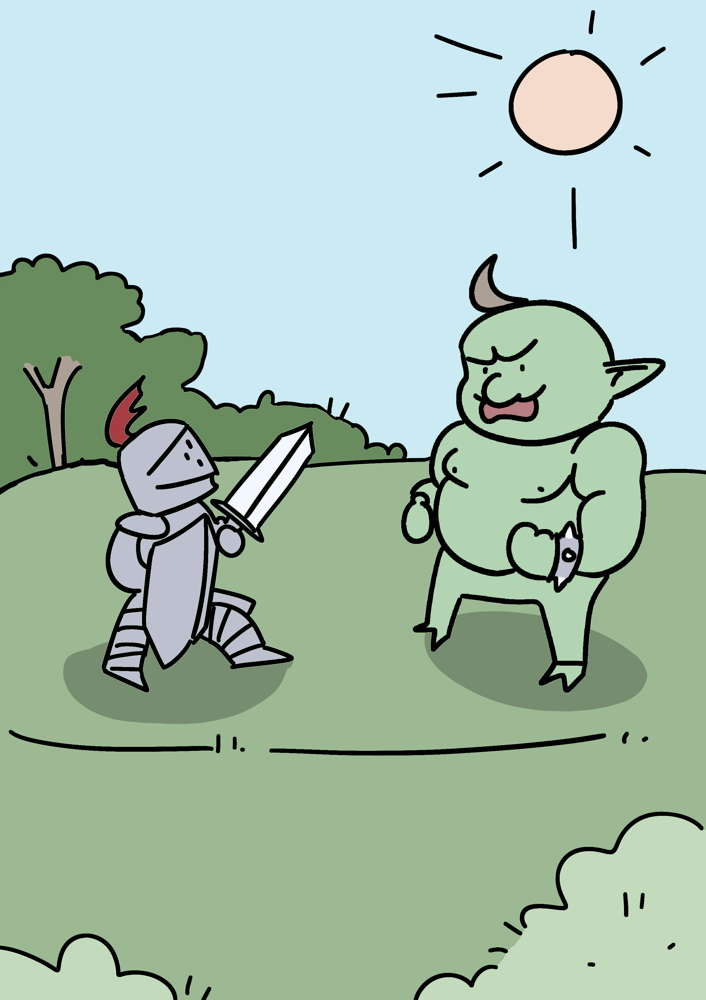
อัศวินคนหนึ่งกำลังต่อสู้กับมอนสเตอร์ขนาดใหญ่
เสียงคำรามของมันสั่นสะเทือนพื้น
ดาบของอัศวินฟาดลงไป แต่แทบไม่ทำอะไรได้
เขากำลังเสียเปรียบ
เขาอาจ “ตาย” ในอีกไม่กี่วินาที
คุณหยุดชะงัก
คุณต้องตัดสินใจ
คุณเดินตามร่องรอยของสัญลักษณ์
จนกระทั่งต้นไม้เริ่มเปิดออก
ตรงหน้าคุณคือ “ประตูหินขนาดใหญ่”
มันสูงตระหง่าน
ปกคลุมด้วยเถาวัลย์
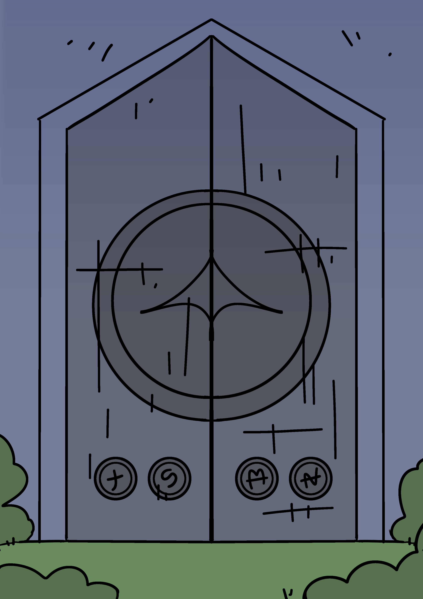
และเต็มไปด้วยสัญลักษณ์ที่เรียงกันเป็นวง
มันดูเก่า…แต่ยัง “มีชีวิต”
เหมือนมันกำลังรอใครบางคน
หรือบางอย่าง
คุณก้าวเข้าไปใกล้
คุณเปิดประตูบ้านไม้
แสงสลัว ๆ ภายในทำให้คุณต้องหรี่ตา
แล้วคุณก็เห็น—
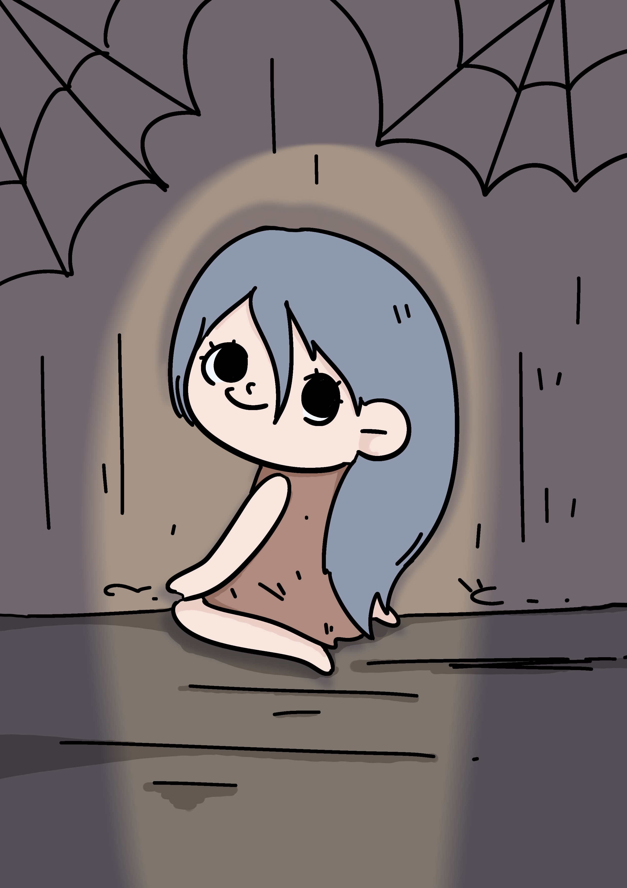
หญิงคนหนึ่งนั่งอยู่ข้างใน
เธอเงยหน้ามองคุณ
และยิ้ม…เหมือนเธอ “รู้จักคุณ”
บรรยากาศเงียบงัน
แต่ไม่ได้น่ากลัว
มัน…แปลก
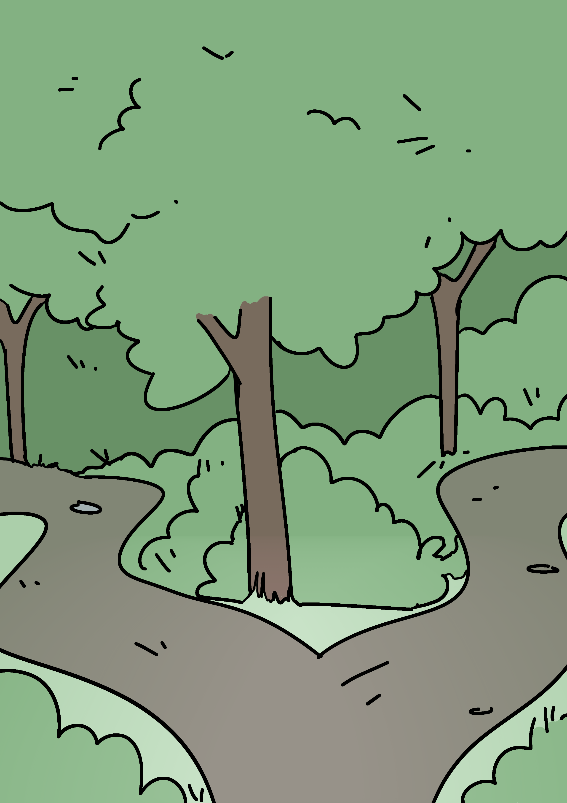
คุณเดินลึกเข้าไปในป่า
ต้นไม้สูงขึ้น แสงเริ่มน้อยลง
ไม่นาน ทางก็แยกออกเป็นหลายเส้น
ลมพัดแรงขึ้น
เสียงใบไม้กระทบกันเหมือนเสียงกระซิบ
เหมือนป่ากำลัง “ชี้นำ” คุณ
เสียงหนัก ๆ ดังขึ้นด้านหลังคุณ
คุณหันกลับไป—
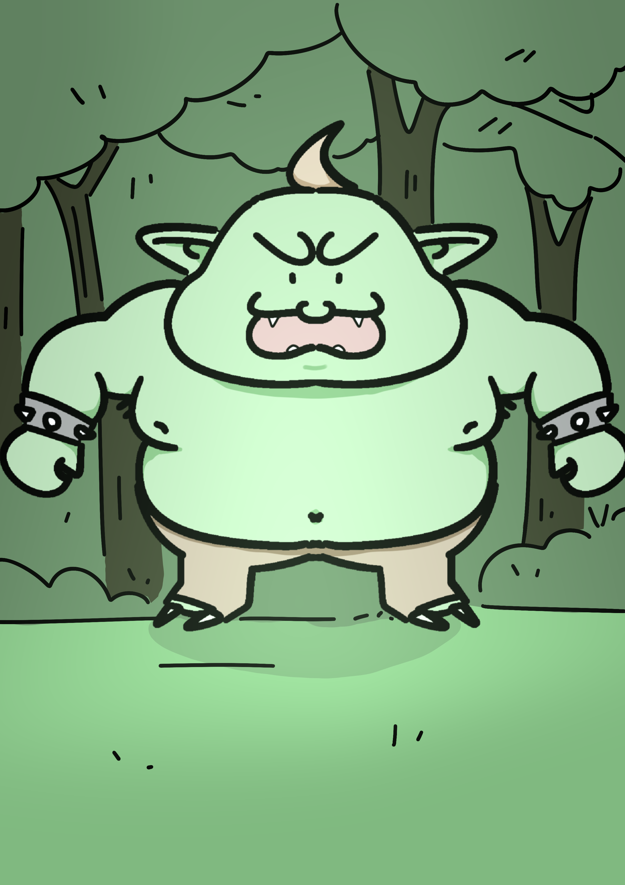
มอนสเตอร์ขนาดมหึมากำลังยืนอยู่ตรงนั้น
ดวงตาของมันจับจ้องมาที่คุณ
ลมหายใจของมันร้อนและหนัก
พื้นดินสั่นทุกครั้งที่มันขยับ
นี่ไม่ใช่การเจอโดยบังเอิญ
มันเหมือน…มัน “รอคุณอยู่”
คุณเข้าสู่ห้องหินปิดตาย
กำแพงเต็มไปด้วยสัญลักษณ์
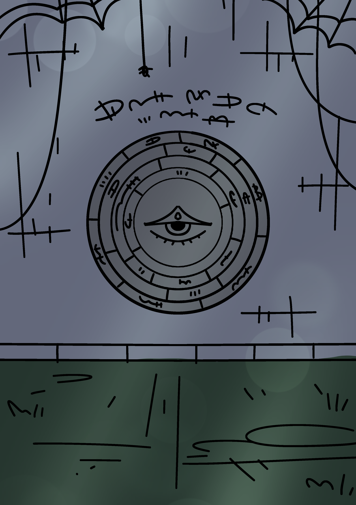
พื้นมีวงกลมที่สามารถหมุนได้
อากาศเย็นและนิ่ง
เหมือนห้องนี้กำลัง “รอการแก้ไข”
คุณเริ่มปะติดปะต่อทุกอย่าง
สัญลักษณ์
บันทึก
คำพูดของผู้คน
ทุกอย่างชี้ไปที่สิ่งเดียวกัน—
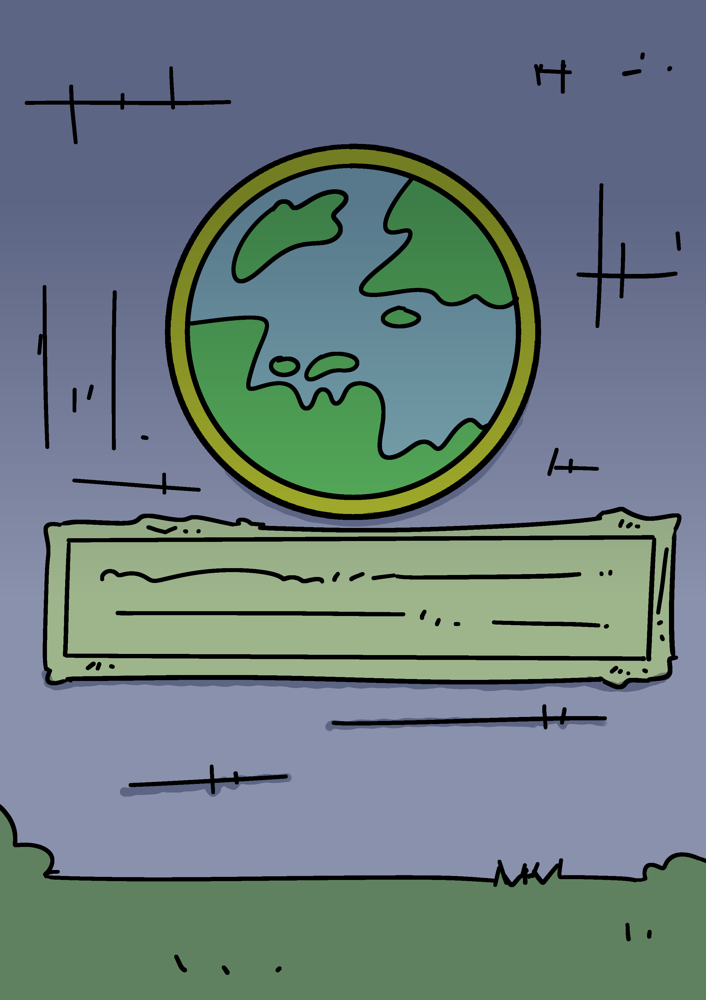
โลกนี้ไม่ใช่ความจริง
มันคือ “การทดสอบ”
และทุกการตัดสินใจของคุณ…กำลังถูกบันทึก
ประตูขนาดมหึมาตั้งอยู่ตรงหน้า
มันเปิดออกช้า ๆ
เผยให้เห็นความมืดภายใน
คุณรู้สึกได้—
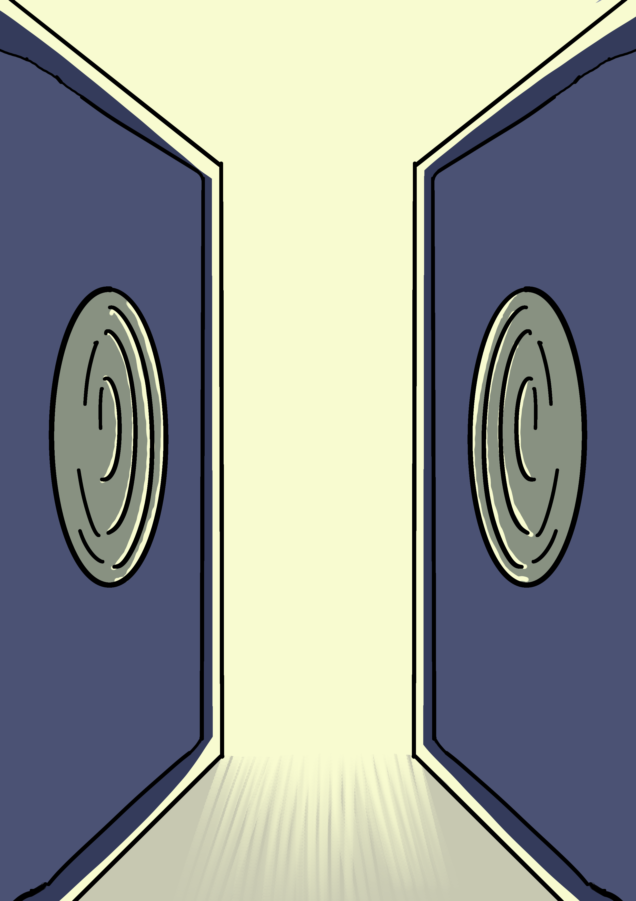
นี่คือ “จุดสิ้นสุด”
ภายในห้องลึกสุด
มีชายคนหนึ่งยืนอยู่
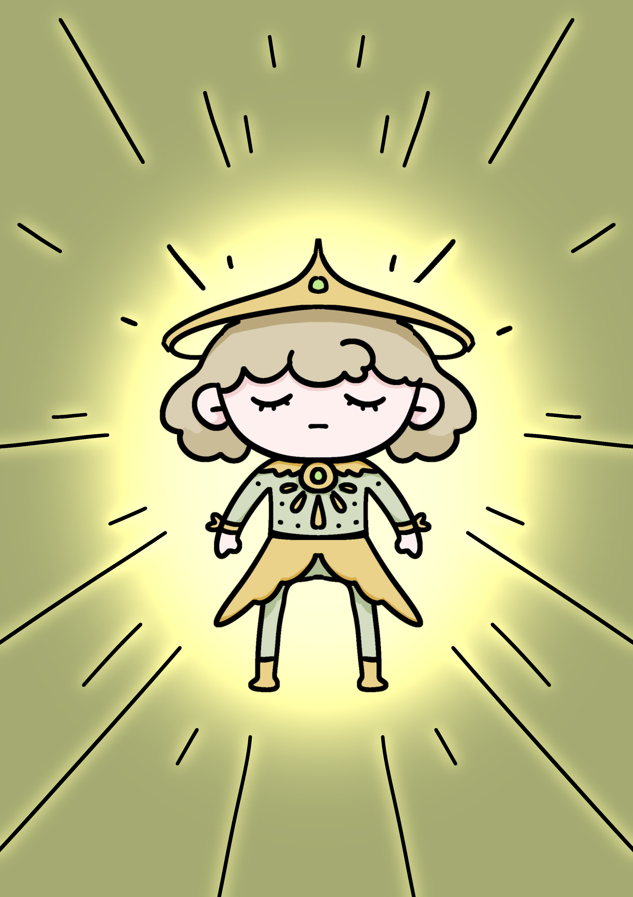
เขามองคุณ…เหมือนเขารู้ทุกอย่าง
“โลกนี้ถูกสร้างขึ้นเพื่อสะท้อนตัวตนของผู้เล่น”